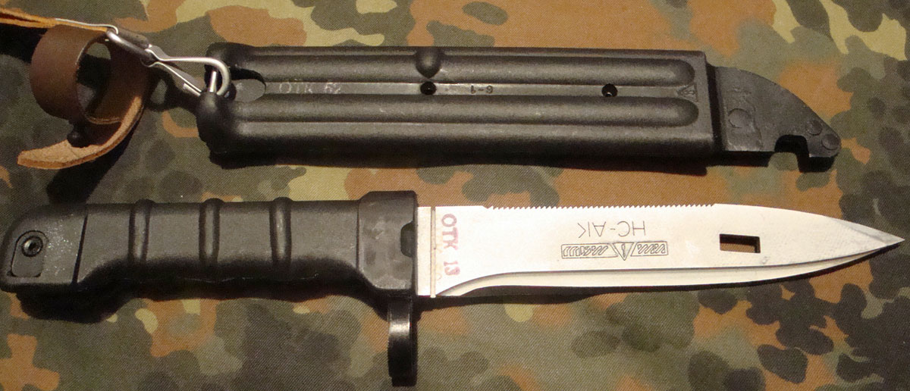
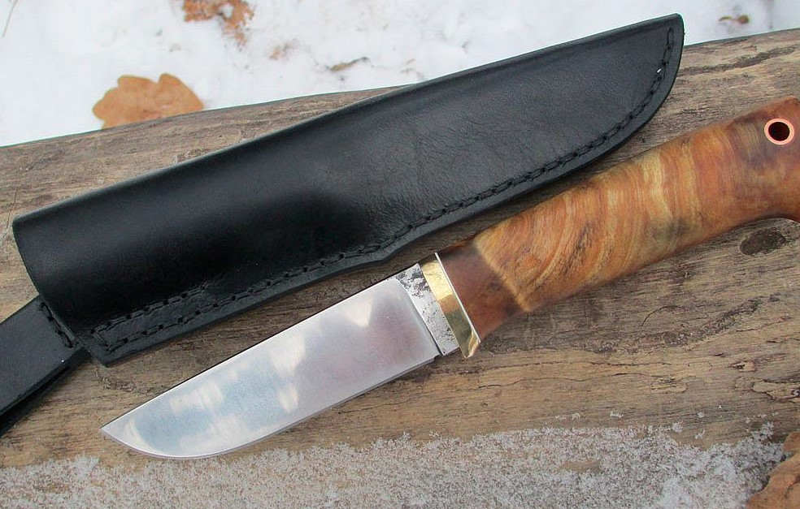
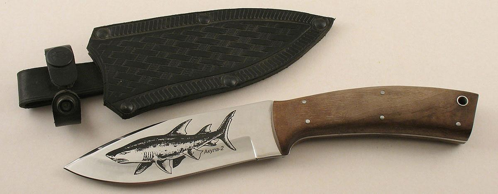
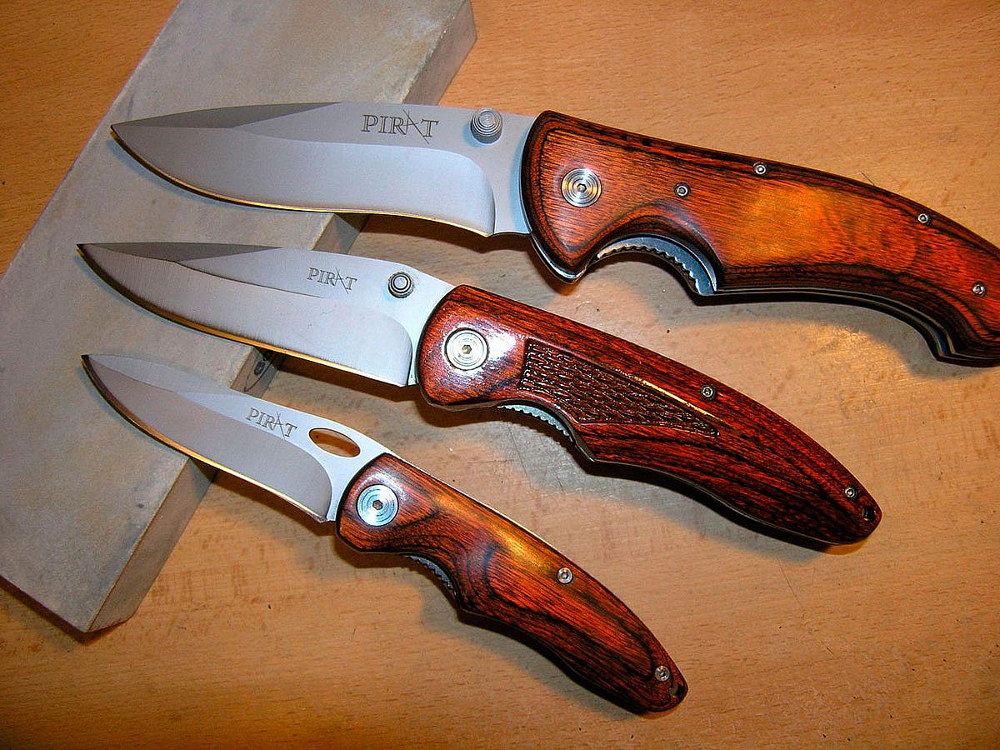
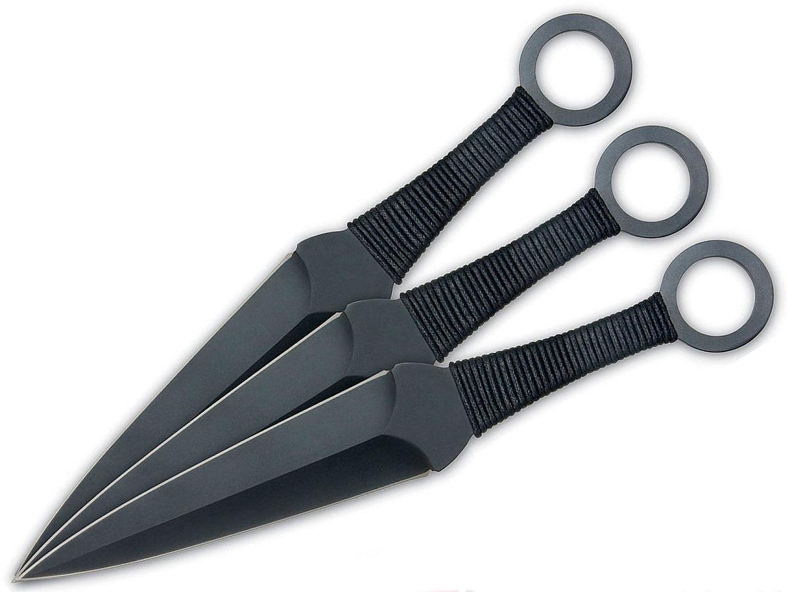

Knives guide - расскажет и покажет всё необходимое, что нужно знать о ножах
Мы расскажем Вам:
- о классификации ножей
- о материалах ножей
- об их истории
- об их возможностях
Часто просматриваемые ножи




